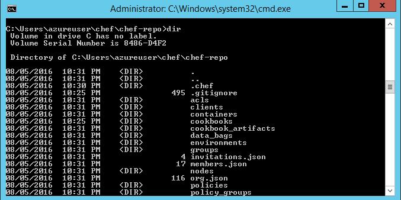
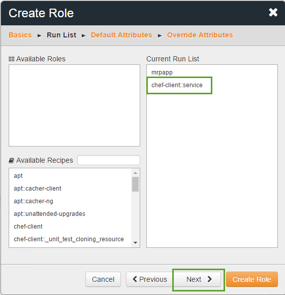

Continuous Deployment with Chef
Parts Unlimited MRP App Continuous Deployment with Chef
In this hands-on lab, you will explore some of the new features and capabilities of Deploying MRP App via Chef Server in Azure. This hands-on lab is designed to point out new features, discuss and describe them, and enable you to understand and explain these features to customers as part of the DevOps Lifecycle.
Pre-requisites
- Active Azure Subscription
Tasks Overview
Provision the Lab: This step walks you through how to set up the Chef set of machines with an ARM template.
Configure the Chef Workstation: You will learn how to set up the Chef Starter Kit on the workstation.
Create a Cookbook: You will create an MRP cookbook and create a recipe for the MRP app’s dependencies.
Create a Role: This step will show you how to create a role to define a baseline set of cookbooks and attributes that can be applied to multiple servers.
Bootstrap the MRP App Server and Deploy the Application: You will bootstrap the MRP app and use the role that you previously created to deploy the app.
Remediating Configuration Changes: You will see how Chef reacts when changes happen to the configuration and how Chef resolves issues.
Task 1: Provision the Lab
-
This lab calls for the use of three machines:
- The Chef server must be a Linux machine.
- The Chef workstation can run on Linux, Windows, or Mac. For this lab, the Chef Workstation will be on a Windows machine.
- The MRP app server will be a Linux machine. This machine will be configured and deployed to by Chef.
Instead of manually creating the VMs in Azure, we are going to use an Azure Resource Management (ARM) template.
-
Simply click the Deploy to Azure button below and follow the wizard to deploy the two machines.
You will need to log in to the Azure Portal.


The VMs will be deployed to a Resource Group along with a virtual network (VNET) and some other required resources. You can delete the resource group in order to remove all the created resources at any time.
-
You will need to select a subscription and region to deploy the Resource Group to and to supply an admin username and password and unique DNS name for all machines :

Make sure you make a note of the region as well as the usernames and passwords for the machines.
Allow about 10 minutes for deployment and then another 10 minutes for the Chef configuration.
-
When the deployment completes, you should see the following resources in the Azure Portal :

Note: The lab requires several ports to be open, such as the Chef Server port, the Chef web page port, and SSH ports. The ARM template opens these ports on the machines for you.
-
The Chef Workstation machine will be used to create cookbooks and trigger deployments.
It is a Windows machine so you can connect using Remote Desktop.
Click on the “chefworkstation” Public IP Address. Then make a note of the DNS name:

Connect to the machine with Remote Desktop and the username and password you set :

-
From the Chef Workstation machine, log in to the Chef Manage web site (Please use Firefox or Chrome which are already installed on the machine).
The dnsaddress will be of the form machinename.region.cloudapp.azure.com.
Open a browser to https://dnsaddress. (Make sure you’re going to http__s__, not http). You will be prompted about an invalid certificate - it is safe to ignore this for the purposes of this lab.
If the Chef configuration has succeeded, you should see the Chef web page and enter the VM name:

Now go back to the Chef web page in your browser and enter the username and the password you set.
When you log in, you should see a page like this:

Task 2: Configure the Chef Workstation
In this exercise, you will configure your Chef Workstation.
-
Open the Chef Development Kit shell (you should have a desktop shortcut for it) and run
chef verify:
The chef verify command returned errors that git was not configured with your identity information.
Proceed with step 2 to configure your identify information in git.
-
Configure your global git variables with your name and email address :
git config --global user.name “YourName”git config --global user.email “you@yourdomain.com”
Run
chef verifyagain to ensure no further errors exist. -
Go back to the Chef Manage website, go to the Administration tab, then select the partsunlimited organization. Click on the Starter Kit on the left, then Download Starter Kit.

-
Extract the Chef starter kit files to a directory like
C:\Users\<username>\chef\. -
Open the knife.rb file in chef-repo.chef and change the chef_server_url to the external FQDN (e.g. https://
. .cloudapp.azure.com/organizations/partsunlimited). Then, save and close the file. 
-
Change directories to the chef-repo directory in the Chef DK shell (i.e.
cd C:\Users\<username>\chef\chef-repo). Run the following git commands:
git init
git add -A
git commit -m "starter kit commit"- Our Chef server has an SSL certificate that is not trusted. As a result, we have to manually trust the SSL certificate in order to have our workstation communicate with the Chef server. This can also be addressed by importing a valid SSL certificate for Chef to use. Run the knife ssl fetch command:
knife ssl fetch- View the current chef-repo contents :
dir- Synchronize the Chef repo :
knife download /-
Run the
dircommand from Step 8 again, and observe that additional files and folders have been created in the chef-repo directory :
-
Commit the added files into the git repository :
git add -A
git commit -m "knife download commit"Task 3: Create a Cookbook
In this exercise, you will create a cookbook to automate the installation of the MRP application and upload it to the Chef server.
- Use the knife tool to generate a cookbook template :
knife cookbook create mrpappA cookbook is a set of tasks for configuring an application or feature. It defines a scenario and everything required to support that scenario. Within a cookbook, there are a series of recipes that define a set of actions to perform. Cookbooks and recipes are written in the Ruby language.
This creates an “mrpapp” directory in the chef-repo/cookbooks/ directory that contains all of the boilerplate code that defines a cookbook and a default recipe.

- Edit the metadata.rb file in our cookbook directory :
Open chef-repo/cookbooks/mrpapp/metadata.rb for edit
Cookbooks and recipes can leverage other cookbooks and recipes. Our cookbook will use a pre-existing recipe for managing APT repositories.
Add the following line at the end of the file :
depends 'apt'
Save and close the file.
-
We need to install three dependencies for our recipe: the apt cookbook, the windows cookbook, and the chef-client cookbook. This can be accomplished using the knife cookbook site command, which will download the cookbooks from the official Chef cookbook repository, https://supermarket.chef.io/cookbooks.
- Install the apt cookbook :
knife cookbook site install apt - Install the windows cookbook :
knife cookbook site install windows - Install the chef-client cookbook :
knife cookbook site install chef-client
- Install the apt cookbook :
-
Switch back to the master branch (this should happen automatically but may fail).
git checkout master -
Copy the full contents of the recipe from here: https://raw.githubusercontent.com/Microsoft/PartsUnlimitedMRP/master/docs/HOL_Deploying-Using-Chef/final/default.rb.
-
Open chef-repo/cookbooks/mrpapp/recipes/default.rb for edit.
The file should look like this to start:
#
# Cookbook Name:: mrpapp
# Recipe:: default
Cd site insta#
# Copyright 2016, YOUR_COMPANY_NAME
#
# All rights reserved - Do Not Redistribute
#-
Paste the contents of the recipe into the default recipe file.

Save and close the file.
-
The following explains what the recipe is doing to provision the application.*
The first thing the recipe will do will be to run the ‘apt’ resource – this will cause our recipe to execute ‘apt-get update’ prior to running, to make sure the package sources on the machine are up-to-date.
# Runs apt-get update
include_recipe "apt"Now we add an apt_repository resource to make sure that the OpenJDK repository is part of our apt repository list and up-to-date.
# Add the Open JDK apt repo
apt_repository 'openJDK' do
uri 'ppa:openjdk-r/ppa'
distribution 'trusty'
endNext, we will use the apt-package recipe to ensure that the OpenJDK and OpenJRE are installed.
# Install JDK and JRE
apt_package 'openjdk-8-jdk' do
action :install
end
apt_package 'openjdk-8-jre' do
action :install
endNext, we set the JAVA_HOME and PATH environment variables to reference OpenJDK.
# Set Java environment variables
ENV['JAVA_HOME'] = "/usr/lib/jvm/java-8-openjdk-amd64"
ENV['PATH'] = "#{ENV['PATH']}:/usr/lib/jvm/java-8-openjdk-amd64/bin"Next, we’ll install the MongoDB database engine and Tomcat web server.
# Install MongoDB
apt_package 'mongodb' do
action :install
end
# Install Tomcat 7
apt_package 'tomcat7' do
action :install
endAt this point, all of our dependencies will be installed, so we can start configuring the applications. First, we need to ensure that our MongoDB database has some baseline data in it. The remote_file resource will download a file to a specified location. It’s idempotent – if the file on the server has the same checksum as the local file, it won’t take any action! This also uses the “notifies” command – if the resource runs (e.g. there’s a new version of the file), it sends a notification to the specified resource, telling it to run.
# Load MongoDB data
remote_file 'mongodb_data' do
source 'https://github.com/Microsoft/PartsUnlimitedMRP/tree/master/deploy/MongoRecords.js'
path './MongoRecords.js'
action :create
notifies :run, "script[mongodb_import]", :immediately
endNow we use a “script” resource to define what command line script should be executed to load the MongoDB data we downloaded in the previous step. This resource has its “action” set to “nothing” – this means it won’t run on its own. The only time this resource will run is when it’s notified by the remote_file resource we used in the previous step. So every time a new version of the MongoRecord.js file is uploaded, the recipe will download it and import it. If the MongoRecords.js file doesn’t change, nothing is downloaded or imported!
script 'mongodb_import' do
interpreter "bash"
action :nothing
code "mongo ordering MongoRecords.js"
endNext, we need to set the port that Tomcat will run our MRP application on. This uses a script resource to invoke a regular expression to update the /etc/tomcat7/server.xml file. The “not_if” action is a guard statement – if the code in the “not_if” action returns true, the resource won’t execute. This lets us make sure the script will only run if it needs to run. Another thing to note: We are referencing an attribute called #{node[‘tomcat’][‘mrp_port’]}. We haven’t defined this value yet, but we will in the next exercise! With attributes, you can set variables, so the MRP application can run on one port on one server, or a different port on a different server. If the port changes, you see that it uses “notifies” to invoke a service restart.
# Set tomcat port
script 'tomcat_port' do
interpreter "bash"
code "sed -i 's/Connector port=\".*\" protocol=\"HTTP\\/1.1\"$/Connector port=\"#{node['tomcat']['mrp_port']}\" protocol=\"HTTP\\/1.1\"/g' /etc/tomcat7/server.xml"
not_if "grep 'Connector port=\"#{node['tomcat']['mrp_port']}\" protocol=\"HTTP/1.1\"$' /etc/tomcat7/server.xml"
notifies :restart, "service[tomcat7]", :immediately
endNow we can download the MRP application and start running it in Tomcat. If we get a new version, it signals the Tomcat service to restart.
# Install the MRP app, restart the Tomcat service if necessary
remote_file 'mrp_app' do
source 'https://github.com/Microsoft/PartsUnlimitedMRP/tree/master/builds/mrp.war'
path '/var/lib/tomcat7/webapps/mrp.war'
action :create
notifies :restart, "service[tomcat7]", :immediately
endWe can define the Tomcat servce’s desired state, which is “running”. This will cause the script to check the Tomcat service, and start it if it isn’t running. We can also signal this resource to “restart” with “notifies” (see above).
# Ensure Tomcat is running
service 'tomcat7' do
action :start
endFinally, we can make sure the ordering service is running. This uses a combination of remote_file and script resources to check if the ordering service needs to be killed and restarted, or if it’s not running at all when it should be. The end result of this is that the ordering service will always be up and running.
remote_file 'ordering_service' do
source 'https://github.com/Microsoft/PartsUnlimitedMRP/tree/master/builds/ordering-service-0.1.0.jar'
path './ordering-service-0.1.0.jar'
action :create
notifies :run, "script[stop_ordering_service]", :immediately
end
# Kill the ordering service
script 'stop_ordering_service' do
interpreter "bash"
# Only run when notifed
action :nothing
code "pkill -f ordering-service"
only_if "pgrep -f ordering-service"
end
# Start the ordering service.
script 'start_ordering_service' do
interpreter "bash"
code "/usr/lib/jvm/java-8-openjdk-amd64/bin/java -jar ordering-service-0.1.0.jar &"
not_if "pgrep -f ordering-service"
end-
Commit the added files into the git repository:
git add . git commit -m “mrp cookbook commit” -
Now that the recipe is written, we can upload the cookbooks to the Chef server. From the command line, run:
knife cookbook upload mrpapp –include-dependencies knife cookbook upload chef-client –include-dependenciesNow that we have a recipe created and all of the dependencies installed, we can upload our cookbooks and recipes to the Chef server with the knife upload command.
Task 4: Create a Role
In this exercise, you will use the Chef Manage web site to create a role to define a baseline set of cookbooks and attributes that can be applied to multiple servers.
At the start of this task, you should be logged in to the Chef Manage web site.
-
Click on the “Policy” tab. Then, click on the “Roles” tab and then “Create.”

-
Enter the role name mrp then the “Next” button.

-
Under Available Recipes, find the mrpapp recipe.
A run list is a series of recipes to apply. We’re defining a role that can be applied to as many servers as we want that will run the MRP application.
Drag the mrpapp recipe to the Current Run List box.

-
Repeat for the chef-client::service recipe.

The run list should be:
mrpapp chef-client::serviceClick Next.
-
In the Default Attributes box, paste the text :
{
"tomcat": {
"mrp_port": 9080
}
}
In the previous exercise, we referenced an attribute called ['tomcat']['mrp_port'] in our recipe. This was referencing a JSON object. Now we can define default values to provide.
Click Next.
- Paste the following JSON in the Override Attributes box :
{
"chef_client": {
"interval": "60",
"splay": "1"
}
}
The second recipe we added to the run list was chef-client:: service. This recipe ensure that the Chef client will run on a regular basis to ensure that the environment is in sync with what is defined in our recipe. However, the default value for the chef client service is to sync every 30 minutes. We can override that value here and set it to a more frequent interval.
Then, click Create Role.
Task 5: Bootstrap the MRP App Server and Deploy the Application
In this exercise, you will run the knife command to bootstrap the MRP app server and assign the MRP application role.
-
Use knife to boostrap the VM:
knife bootstrap <FQDN-for-MRP-App-VM> --ssh-user <mrp-app-admin-username> --ssh-password <mrp-app-admin-password> --node-name mrp-app --run-list role[mrp] --sudo --verbose
The script will take approximately 15 minutes to run. You will see it do the following things: - Install Chef on the VM - Assign the mrp Chef role to the VM and execute the mrpapp recipe.
Once the deployment is complete, you should be able to navigate to the MRP application website and use it normally.
-
Open the URL you chose for your public DNS name in a browser. The URL should be something like
http://<mrp-dns-name>.<region>.cloudapp.azure.com:9080/mrp.
-
Click around the site and observe that it functions normally.
Task 6: Remediating Configuration Changes
In this exercise, you will make a change to the configuration of your MRP application server, then observe as Chef automatically corrects the issue.
-
Start PuTTY.exe (which has already been installed on the Chef workstation) and enter the host name of the MRP application server. Then click Open.

Click Yes to cache the server host key.
-
When prompted for a user name, enter the MRP admin username and press Enter.

When prompted for a password, enter the MRP admin password and press Enter.
Wait for the command prompt to appear.
-
In PuTTY on the MRP Server, execute the following command to stop the Tomcat service:
sudo service tomcat7 stop -
In your browser, refresh the MRP app tab and observe that it is no longer accessible.
-
Go to the Chef Manage web site and click on the Reports tab. This will take you to the dashboard where you can see statistics about your deployments.
Click Run History.
Observe that the node has a first successful run that executed 25/51 resources, and possibly additional runs that executed 0/35 resources. This is because the chef client installed on the server runs every 60 seconds and checks for environmental discrepancies.

-
Click on the run that shows 1/35 resources executed. In the Details tab, it shows that the action executed was starting tomcat7.

-
Reload the MRP application site, and you should see the site successfully load.
In this hands-on lab you explored some of the new features and capabilities of Deploying MRP App via Chef Server in Azure. This hands-on lab was designed to point out new features, discuss and describe them, and enable you to understand and explain these features to customers as part of the DevOps Lifecycle.
Continuous Feedbacks
Issues / Questions about this HOL ??
Thanks